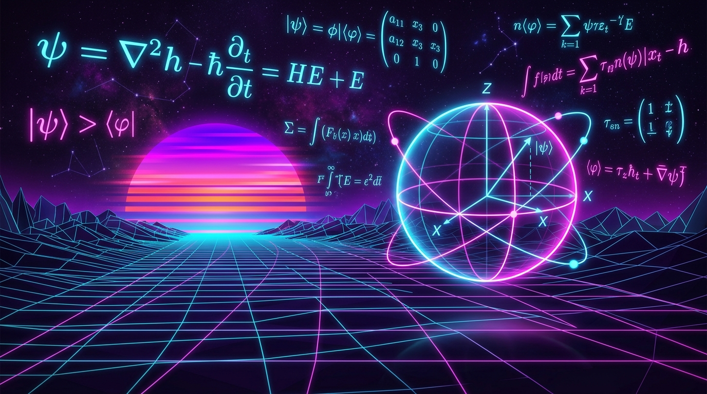

NUMBER THEORY &
QUANTUM NETWORKS
Exploring the deep connections between number theory, pair balances, Riemann zeros, and their applications in quantum networks.

Quantum Bloch Sphere & Superposition Lab
Adjust the quantum state angles $\theta$ and $\phi$ to visualize pure qubit state evolution $|\psi\rangle$ on the Bloch sphere, or trigger Born-rule projective measurement.
Research Papers & Preprints
Peer-reviewed journal publications, conference proceedings, and arXiv preprints. All papers include open licenses, BibTeX citations, and direct code links.
Open Source Quantum Software & Code
Directly connected to GitHub. Enter any GitHub username to live-sync and preview your active research codebases.
Open Science Licensing & Metadata Generator
Attach standardized, machine-readable open licenses to your research papers, preprints, datasets, and computational simulation code.
Select License Standard
Click a license to generate ready-to-copy Markdown badges, LaTeX paper header notices, and BibTeX fields.
CC BY 4.0 PAPERS
Creative Commons Attribution 4.0 International. Standard for open-access papers and preprints.
MIT License CODE
Permissive open source software license for research algorithms, Qiskit scripts, and solvers.
Apache 2.0 SOFTWARE
Permissive license with explicit patent protection grants for deep-tech quantum libraries.
CC0 1.0 Universal DATASETS
Public domain dedication for quantum benchmarking datasets, raw spectra, and measurement logs.
Abhijit Singh
Number Theory & Quantum Networks
Research Profile
My research lies at the intersection of mathematics, physics, and cognitive networks, deeply exploring pair balances, the Riemann zeros, and how these fundamental numerical properties translate into quantum states and excitable tissue networks.